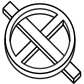
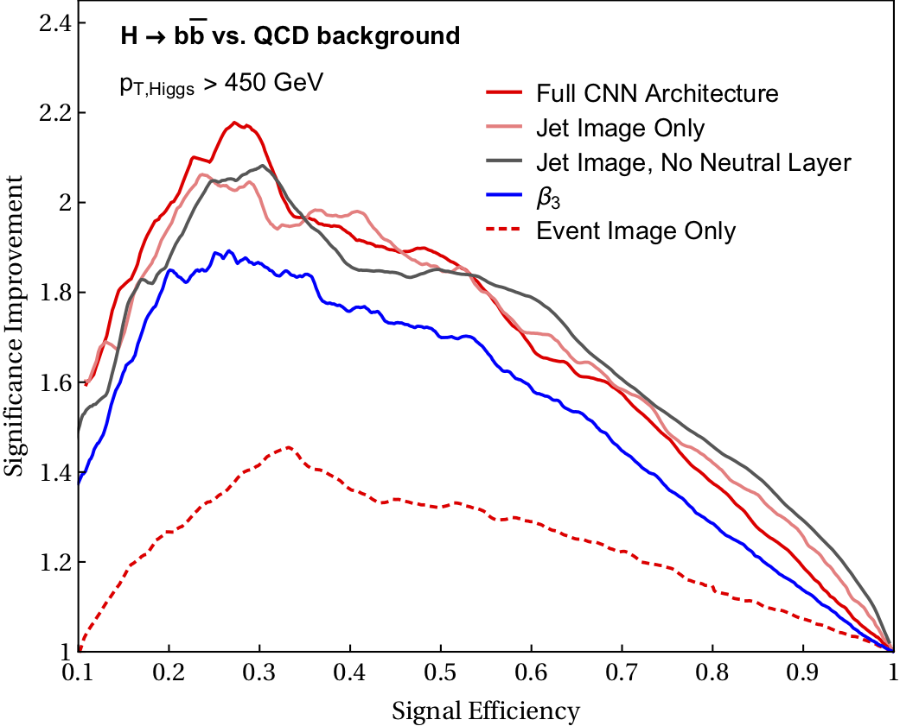
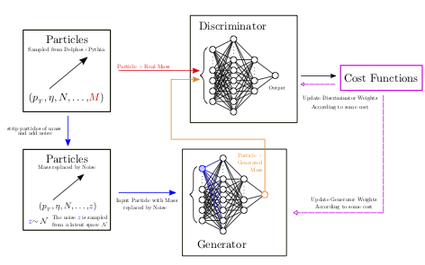

Joshua Lin

Email: joshua.z.lin@berkeley.edu
CV: PDF Link
Undergraduate double major in Mathematics and Physics at UC Berkeley (due to graduate May 2020).
I like Condensed Matter Physics, Topology/Geometry, High Energy Physics, Category Theory.

Published J. High Energ. Phys. (2019) 2019: 181.
Journal link, Arxiv link
Developed Machine Learning methods (two-stream CNN model) to search for Higgs \(\to b\bar{b}\) quark decays, which is traditionally a difficult channel to search for because of the overwhelming QCD background from events such as \(gg \to b\bar{b}\). These searches also allow us to place tighter constraints on BSM limits with enough data, by probing the high-\(p_T\) regime.

J. High Energ. Phys. (2019) 2019: 181.
Journal, Arxiv
Proposed an alternative to Jet Mass templates and other data-driven models for High Energy Physics searches, for instance for use in RPV-SUSY searches. Also proposed a modification to WGAN that greatly stabilises training and results for this problem, based off Lie theory.